Maia (1903)
Poema autobiografico scritto con versi liberi che esalta i valori del futurismo.
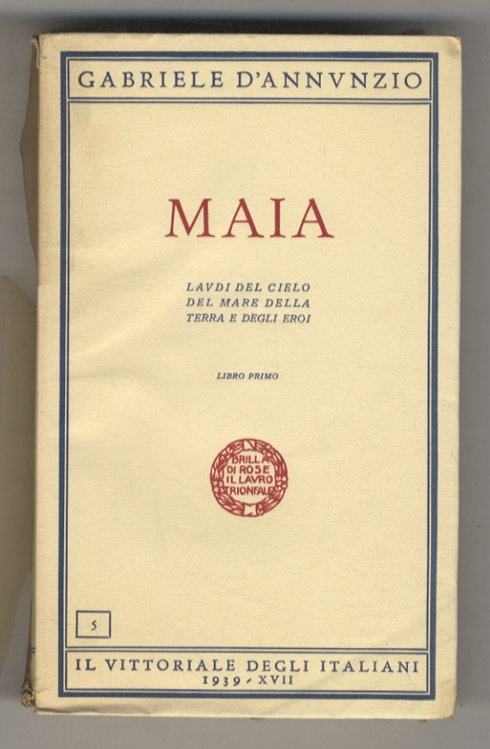
«Io non vivo, io ardo. La vita è arte, e ogni giorno una scena da celebrare.»
Io sono Gabriele d’Annunzio: poeta, romanziere, uomo di scena e d’azione. Nacqui a Pescara nel 1863, tra il mare e la luce d’Abruzzo, e fin da giovane compresi che la vita non è da vivere, ma da scolpire. Ogni mio gesto, ogni parola, ogni respiro fu un atto estetico, un’offerta alla bellezza. Sin dai primi versi cercai un linguaggio che fosse musica e colore, un’arte che non descrivesse il mondo ma lo trasfigurasse. Con Il Piacere consacrai il culto dell’eleganza e dell’assoluto; con le mie poesie immersi la parola nella natura, nella luce, nel desiderio. Ma io non fui soltanto scrittore: fui soldato, aviatore, ardito. Durante la Grande Guerra osai imprese che divennero leggenda, perché la vita, per me, doveva sempre superare la pagina. Io non raccontavo l’eroismo: lo compivo. Le mie passioni, le mie amanti, i miei viaggi, le mie battaglie: tutto fu materia di arte. Tutto fu fiamma. Oggi il Vittoriale degli Italiani custodisce la mia memoria, il mio stile, la mia visione. Io non ho lasciato un’esistenza: ho lasciato un’opera.


Poema autobiografico scritto con versi liberi che esalta i valori del futurismo.

Raccoglie poesie celebrative di propaganda politica. Vi è un polo positivo, rappresentato da un passato e da un futuro di gloria e di bellezza, che si contrappongono a un polo negativo, un presente da riscattare. Nelle poesie della raccolta esplode l'ideologia nazionalistica e bellicista.
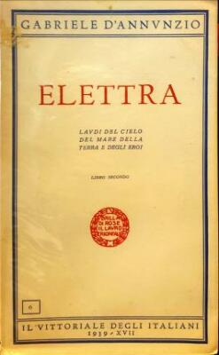
Raccolta poetica della fase simbolista, dove natura, mito e sentimento si fondono. Include la celebre lirica “La pioggia nel pineto”.
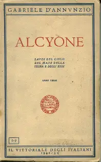
Il personaggio di Maia rappresenta l'ideale dell'uomo moderno, superiore e straordinario. Non fugge di fronte alla realtà industriale come gli altri esteti, ma vede la modernità come un opportunità per DISTINGUERSI DALLA MASSA e scopre la bellezza del capitalismo. In questo personaggio troviamo i caratteri del futurismo: attivismo eroico, aggressività, stile eccessivo, aulico ed elaborato.
Elettra è caratterizzata da un forte senso di patriottismo e da un tono bellicista che riflette l'ideologia nazionalista dell'epoca. Come vate, D'Annunzio utilizza il linguaggio per promuovere idee di nazionalismo e militarismo, cantando un PASSATO GLOROSO che diventi MODELLO IDEALE per l'Italia (concetti poi ripresi da Mussolini).
Alcyone è un'opera che rappresenta un diario ideale di una vacanza estiva che descrive le tappe di un viaggio
lungo l'Italia con la sua amata (Eleonora Duse: attrice di livello internazionale, che aveva aperto le porte di salotti a D'Annunzio).
Viene usato uno stile elaborato, con un linguaggio analogico e molta musicalità.
PIENEZZA VITALISTICA: avvicinarsi a una condizione divina
PANISMO: fusione con la natura
SPIRITUALITÀ: ricerca di un significato più profondo attraverso evasione e contemplazione
Il personaggio di Maia rappresenta l'ideale dell'uomo moderno, superiore e straordinario. Non fugge di fronte alla realtà industriale come gli altri esteti, ma vede la modernità come un opportunità per DISTINGUERSI DALLA MASSA e scopre la bellezza del capitalismo. In questo personaggio troviamo i caratteri del futurismo: attivismo eroico, aggressività, stile eccessivo, aulico ed elaborato.
Tragedia in versi ambientata in Abruzzo, che unisce folklore, natura e destino tragico.
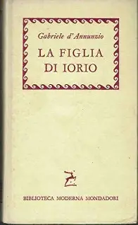
Dramma ispirato alla Divina Commedia, incentrato sulla passione travolgente e sul destino.

Romanzo simbolo dell’estetismo e del decadentismo, celebra l’eros e la bellezza come valori assoluti.
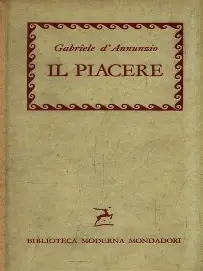
"Il Piacere" è una storia di relazioni che esplora il piacere sensoriale ed edonistico (egotismo). Il protagonista Andrea Sperelli (personaggio che rappresenta D’Annunzio) è un giovane aristocratico educato dal padre attraverso viaggi. Egli lo aveva formato a vivere la propria vita come un opera d'arte. Sperelli vive anche le relazioni come un opera d'arte e frequenta due donne contemporaneamente: ELENA MUTI (la Femme Fatal, la Salomet, espressione della sensualità e del piacere) e MARIA FERRES (la donna ideale, inarrivabile, simbolo della purezza e della spiritualità). Nel cercare di fondere le due relazioni Andrea Sperelli rovina tutto e le perde entrambe.
Romanzo che esplora la decadenza morale e la ricerca dell’estasi, temi tipici del decadentismo.
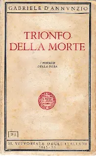
«Quel che c’è in me di misterioso, di sfuggente, di incomprensibile, lasciatemelo.» — Gabriele D’Annunzio
«Ama la vita e la vita ti amerà.» — Gabriele D’Annunzio
«Bisogna fare della propria vita come si fa un’opera d’arte.» — Gabriele D’Annunzio
Io non fui soltanto poeta: fui uomo d’azione, creatore di gesti che valsero più di mille parole. La mia vita fu un susseguirsi di imprese ardite, nate dal desiderio di superare il limite, di trasformare l’esistenza in leggenda.
Ogni mia impresa nacque da un’unica certezza: che l’uomo deve osare, sempre. Che la vita, per essere degna, deve essere vissuta come un’opera. Io non cercavo la gloria: la creavo. E ancora oggi, chi ascolta il mio nome non ricorda solo i miei libri, ma i miei gesti, le mie sfide, il mio ardore.
Quando il cielo divenne campo di battaglia, io lo scelsi come mio regno. Nel celebre volo su Vienna non portai bombe, ma fogli di carta: parole, messaggi, sfida. Volevo dimostrare che l’audacia può essere più potente della distruzione. Sorvolai la città nemica come un’ombra luminosa, lasciando cadere non morte, ma pensiero.
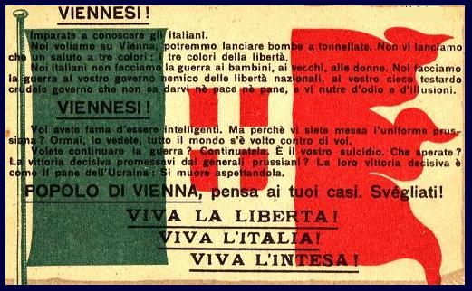
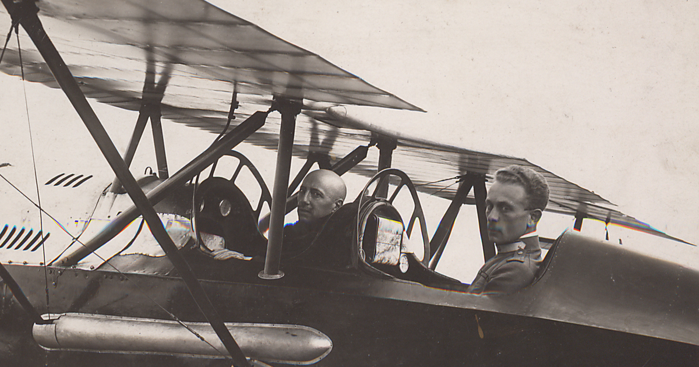
Nelle acque scure dell’Adriatico compii un’altra impresa che divenne mito. Con pochi uomini, poche torpediniere e un coraggio smisurato, violai le difese austriache. Non fu un attacco: fu un simbolo. Una beffa, sì, ma anche un grido di libertà, un atto di volontà pura contro un nemico che credeva di essere inviolabile.
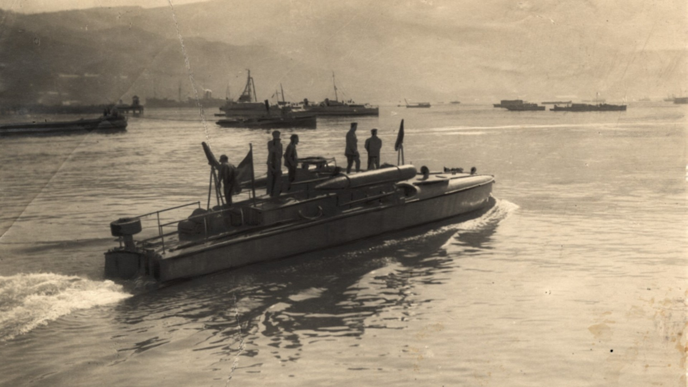
Nel 1919 guidai quella che fu forse la mia più grande creazione: Fiume. Dopo la prima guerra mondiale, non potevo permettere che una vittoria mutilata spegnesse lo spirito italiano. Non una conquista militare, ma un poema vivente. Una città trasformata in laboratorio di arte, politica, musica, ardore. Io non governavo: ispiravo. Fiume fu il mio teatro, il mio manifesto, la mia utopia. Un luogo dove la parola diventava legge e la bellezza diventava forma di governo.

Negli anni successivi, il Duce tentò di avvicinarmi, di farmi simbolo del nuovo corso politico. Io rimasi al Vittoriale, tra arte e memoria, lontano dalle stanze del potere. La mia influenza fu più estetica che politica, più mitica che istituzionale.


Il mio corpo fu sempre tempio e strumento. Amavo lo slancio, la forza, la disciplina del gesto atletico. Lo sport, per me, non era passatempo: era rito, era educazione dell’anima attraverso il vigore dei muscoli. Nelle corse, nelle nuotate, nelle prove fisiche che affrontai da giovane e da soldato, cercavo la stessa intensità che inseguivo nella poesia. Il movimento era libertà, era dominio di sé, era bellezza in azione. Io volevo essere atleta dello spirito e della carne.
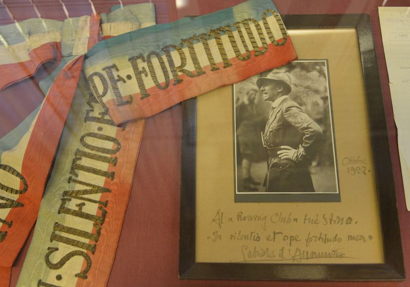
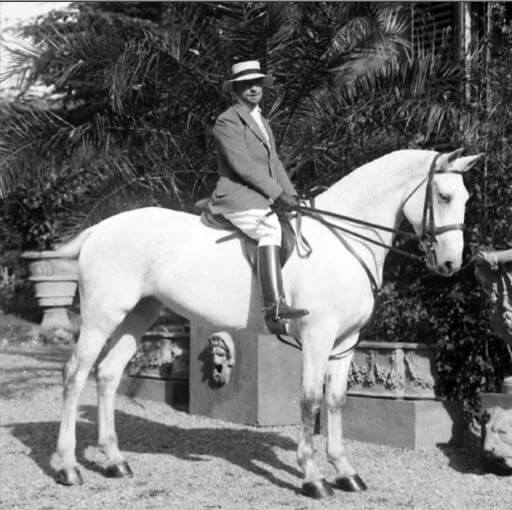
Il Vittoriale fu la mia ultima dimora, il luogo dove raccolsi la mia vita e la trasformai in monumento. Non una semplice casa, ma un tempio di memoria, arte e simboli, affacciato sul lago di Garda.
Ogni stanza, ogni giardino, ogni oggetto racconta una parte di me: le imprese, le passioni, i sogni. Volli che il Vittoriale fosse dono agli Italiani, testimonianza della mia esistenza vissuta come opera d’arte.
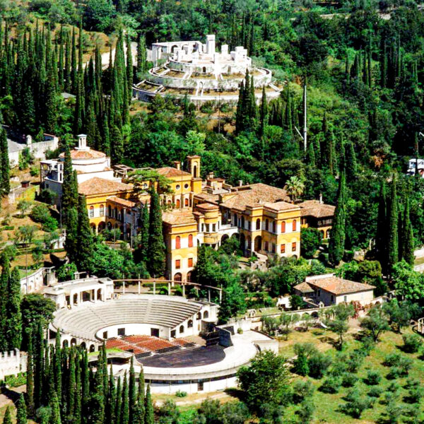
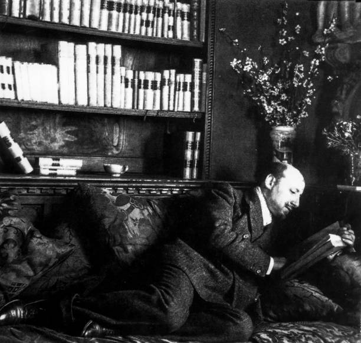